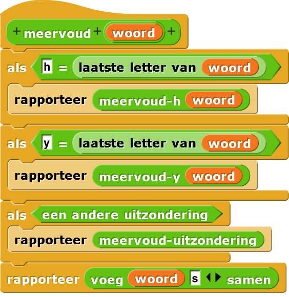
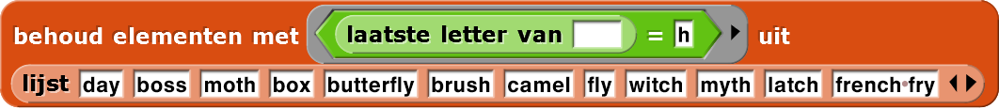
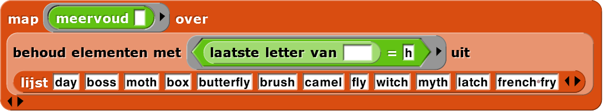

Taal modeleren: Meervoudsvormen, deel 2
Je kan meervoud verbeteren door voor meer woorden te werken. Als je het project nog niet open
hebt staan, zorg daar dan voor. (De projectnaam is als het goed is H2-Meervoud.)
-
Abstractie: Maak een dat werkt
voor één
categorie woorden,
woorden die eindigen op de letter h.
- Start met een
lijstmet woorden waarvan je wil dat het correct het meervoud kan geven. - Dit gespecialiseerde blok zou moeten werken voor alle woorden van zijn specialiteit
,
,
,
omdat het
meervoudblok nooit een woord aanmeervoud-hgeeft behalve als dat woord eindigt op een h. - Test
 met een verschillende groep woorden
om zeker te weten dat hij doet wat je wil. Gebruik daarna
met een verschillende groep woorden
om zeker te weten dat hij doet wat je wil. Gebruik daarna mapom op de helelijstte testen die je al gemaakt hebt bij de vorige pagina.
- Start met een
- Als je je nieuwe gespecialiseerde blok vertrouwt, pas dan
meervoudaan om dit blok te gebruiken. Test ofmeervoudnog steeds werkt voor alle woordeen waar het voorheen voor werkte en ook voor de nieuwe woorden. Je kan voor het testenmapgebruiken. - Maak
meervoud-yom woorden zoals en
aan te kunnen.
en
aan te kunnen.
Abstractie: Taal heeft vaak uitzonderingen. In het Engels eindigen de
meervoudsvormen van sommige woorden op s, sommige op es en woorden zoals
calf en fly worden calves en flies, waarbij hun laatste
letter verandert voordat es wordt toegevoegd. Er zijn zo nog veel meer uitzonderingen.
Voor een programmeertaak zo complex als deze, is het vaak een goed idee om het probleem op de
breken in stukjes. We maken voor ieder probleemstukje zijn eigen gespecialiseerde blok en een
special "manager"-blok maakt dan gebruik van die gespecialiseerde blokken. In dit geval is dit
managerblok meervoud. In plaats van dat we dus iedere uitzondering direct in
meervoud bouwen, is het veel overzichtelijker en opgeruimder om
meervoud er ongeveer zo uit te laten zien.

De structuur van een methode laten zien, eigenlijk de strategie, in het managerblok en
de details overlaten aan aparte blokken is deel van een belangrijk begrip binnen de informatica
genaamd abstractie. Abstractie houdt je code overzichtelijk, leesbaar en
makkelijker te debuggen. Het maakt je code ook flexibeler.
Onthoud dat een specialist fouten maakt als hij een taak krijgt waarin hij niet gespecialiseerd is.
Zorg dat meervoud alleen taken geeft aan meervoud-y die het aankan.
- Omdat je weet wat  doet,
kan je, als je wil, alleen de gespecialiseerde lijst als invoer gebruiken om
meervoudofmeervoud-hte testen. Op deze manier:  - Breid
meervouduit om met nog een uitzondering om te gaan. Je mag zelf bedenken welke. Gebruik een gespecialiseerd blok voor deze uitzondering zodatmeervoudnetjes blijft. - Als
meervoudnu een woord krijgt met een spatie aan het einde, blijft die spatie in het de meervoudsvorm, zoals dit: d. Vind een manier om dit op te lossen zodat het resultaat is. Je hebt al een blok dat gespecialiseerd is in meervoudsvormen van woorden die niet op een spatie eindigen. Gebruik die. - Verrassing! Als
meervoudeenmaal werkt met een enkele spatie op het einde, probeer dan eens uit te voeren. Werkt dat ook meteen? Zo ja, waarom?! Zo niet, probeer dan te zorgen dat het ook werkt.